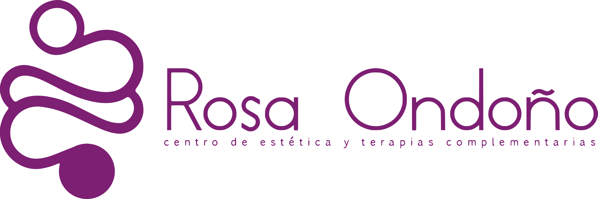
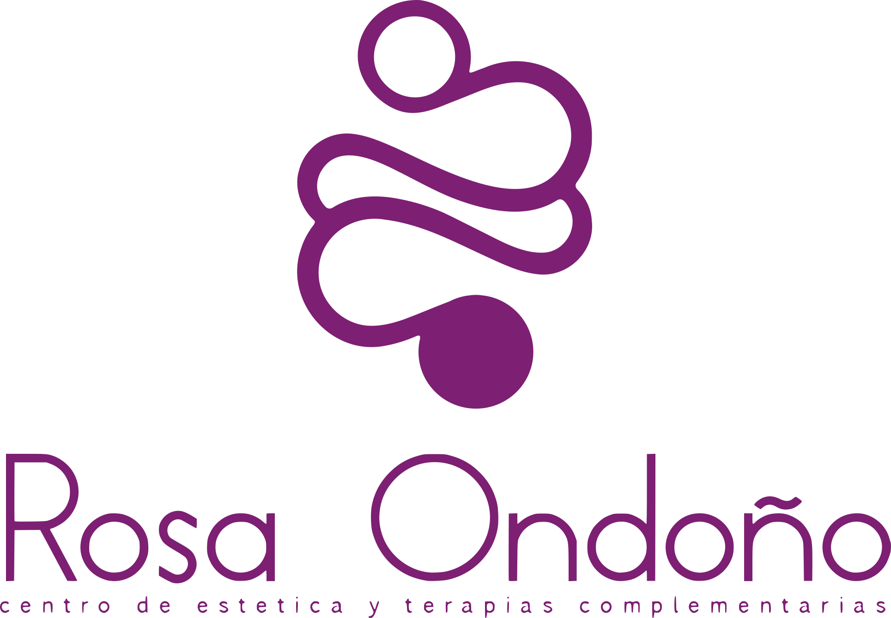
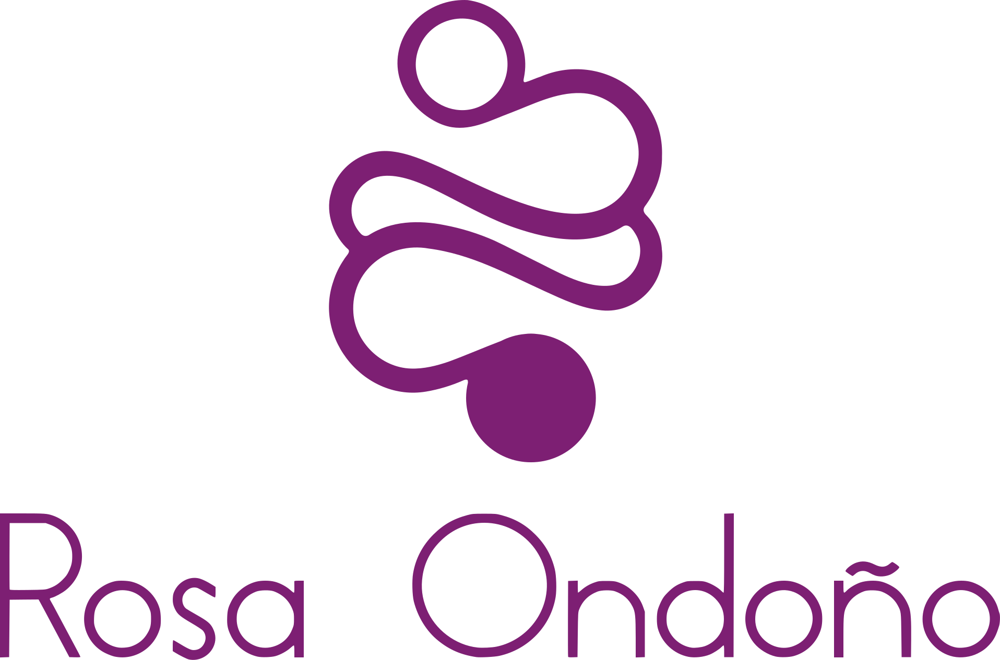

Siente
Un tiempo
solo para ti.
Manual de marca · v3.0 · Noviembre 2026

Cuídate · Conecta · Siente
Índice
Todo lo necesario para que Rosa Ondoño se vea, suene y se comporte igual en cualquier lugar: en cabina, en la web, en las redes, en un vale regalo o en la placa del portal.
Estrategia
Manifiesto, propósito, posicionamiento y mensajes
Arquetipo y voz
Personalidad, tono, escritura y vocabulario
Logotipo
Sistema, construcción, versiones y usos
Color
Paleta, procedencia, parejas y proporción
Tipografía
Lettering del logo, familias y jerarquía
Elementos gráficos
Supergráfico, iconos y fotografía
Aplicaciones
Papelería, redes, web, espacio y presentaciones
Accesibilidad y archivos
Contraste, formatos, reglas y contacto
Introducción
Reúne el trabajo de cinco disciplinas. Cada sección responde a una pregunta: quiénes somos, cómo hablamos, cómo nos vemos y cómo nos aplicamos.
01
Propósito, valores, posicionamiento y el lema como estructura de la oferta.
02
Arquetipo, personalidad, tono y ejemplos por canal.
03
Logotipo, color, tipografía, iconos y supergráfico.
04
Luz, encuadres, qué sí, qué no y protocolo antes/después.
05
Papelería, redes, web, señalética, uniforme y packaging.
El isotipo no se redibuja, deforma, recolorea ni lleva efectos. El color corporativo no se modifica: todo lo demás se construye a su alrededor.
Las reglas de logotipo, color y legales son obligatorias. Lo demás son recomendaciones. Lo marcado PENDIENTE espera la confirmación del cliente y no se usa en producción.
Marca
Rosa Ondoño
Categoría
Estética, terapias y medicina estética
Lema
Cuídate · Conecta · Siente
Arquetipo
Cuidador + Sabio
Color clave
#7D1F73
Tipografías
Jost · Cormorant
01
Bienestar integral con criterio
01 · Manifiesto
Cuidarse no debería ser una carrera.
Ni una promesa imposible, ni una oferta que caduca el viernes.
Nos negamos a vender milagros. A tratar la piel como un defecto que corregir. A medir el bienestar en descuentos.
Creemos que cuidarse empieza por escuchar. Que unas manos expertas saben cosas que ninguna máquina sabe. Que la piel, el cuerpo y la emoción van juntos, y así hay que tratarlos.
Creemos en decir la verdad, aunque a veces sea «esto no lo necesitas».
Esto es para quien quiere verse bien sin dejar de reconocerse. Para quien busca a alguien de confianza, no un catálogo.
Llevamos más de treinta años haciéndolo así. Y así seguiremos.
Cuídate · Conecta · Siente
01 · Estrategia
Un centro de estética, terapias manuales y complementarias y medicina estética en la Av. Maisonnave de Alicante, fundado por Rosa Ondoño: más de 30 años de oficio, formación en estética, naturopatía y terapias manuales, y médicos que le confían el drenaje postquirúrgico de sus pacientes.
Es el único lugar de la zona que reúne bajo un mismo techo la piel, el cuerpo y la emoción, con supervisión médica.
El reto de marca. Hoy la web dice «tu oasis» y «resultados garantizados», como cualquiera. Rosa Ondoño tiene que sonar a lo que dicen sus clientas: trato, calma, sinceridad y oficio.
Personas de Alicante, sobre todo mujeres de 35 a 65 años, que quieren cuidarse sin perder naturalidad y buscan a alguien de confianza.
«No sé por dónde empezar ni en quién confiar.» Respuesta: una valoración y un plan propio.
Ni una cadena de bonos y descuentos ni un spa de postal. Tampoco promete milagros.
Bienestar integral con criterio.
01 · Estrategia
Propósito
Que cada persona se cuide con conocimiento y con calma, en cada etapa de su vida.
Misión
Escuchar, valorar y acompañar con un plan propio que une estética, terapias y medicina estética.
Visión
Ser en Alicante el lugar al que se acude, y se recomienda, para que te cuiden y te digan la verdad.
Recomendamos solo lo que tiene sentido para ti, aunque sea menos.
Trato cercano, tiempo y atención al detalle.
Expectativas realistas, sin promesas ni presión.
Más de 30 años de formación y práctica.
Piel, cuerpo y emoción, tratados juntos.
Calma en el espacio y en la palabra.
01 · Estrategia
Para quien quiere cuidarse sin perder naturalidad ni confianza, Rosa Ondoño es el centro de bienestar integral con criterio: estética, terapias y medicina estética supervisada, con una profesional que te dice lo que necesitas, y lo que no.
Compara categorías, no marcas concretas. Hipótesis a validar con clientas.
01 · Estrategia
Cuídate · Conecta · Siente deja de ser una firma decorativa y pasa a ordenar la oferta, la web y el recorrido de cada clienta.
01
Cuídate
Saber qué necesitas es el primer cuidado.
Valoración integral · faciales · corporales · láser · medicina estética con supervisión médica
02
Conecta
Tu cuerpo te habla. Aquí te ayudamos a escucharlo.
Masajes · drenaje pre y postquirúrgico · fisioterapia · osteopatía · terapias complementarias
03
Siente
Un tiempo solo para ti.
Rituales individuales y en pareja · circuito spa · tarjeta regalo
Siempre en este orden, con punto medio ( · ) y mayúscula inicial. No se añaden verbos ni se traduce.
01 · Estrategia
Mensaje central
Rosa Ondoño ayuda a las personas de Alicante a cuidarse con naturalidad y confianza, uniendo estética, terapias y medicina estética supervisada bajo el criterio de una profesional con más de 30 años de oficio.
Propuesta de valor
Un plan para ti, hecho por manos expertas y con supervisión médica, sin prisas ni promesas.
Banco de pruebas
01
Antes de cualquier tratamiento hay una valoración. Si algo no es para ti, te lo decimos.
Prueba: Las reseñas de Google (4,9★) destacan la sinceridad y el trato.
02
El oficio se nota en cómo se escucha, se explica y se trabaja.
Prueba: Formación en estética, naturopatía y terapias manuales. Médicos de Alicante, Madrid y Barcelona derivan a Rosa el drenaje postquirúrgico.
03
Estética, terapias y medicina estética se piensan juntas, en un plan para ti.
Prueba: Medicina estética con supervisión del Dr. Roberth Bravo Pardo.
04
Un tiempo de calma a dos pasos de Maisonnave.
Prueba: Patio-jardín interior en la Av. Maisonnave 38, Alicante.
Cada afirmación tiene una prueba real. No se usan testimonios inventados ni cifras sin fuente.
02
02 · Arquetipo
Rosa Ondoño es un Cuidador con la voz del Sabio: te acompaña y te protege, y además te explica y te dice la verdad.
Que la persona esté bien y tranquila.
La frialdad, la prisa, el abandono tras el tratamiento.
Escuchar y explicar con calma.
Unas manos expertas y una voz que no te vende nada.
Arquetipo que evitamos: el Mago. Su promesa de transformación roza el «resultado garantizado», prohibido en publicidad sanitaria.
02 · Voz
Si Rosa Ondoño fuera una persona, sería una profesional serena y elegante sin ostentación, que te mira a los ojos, te escucha y te dice con cariño lo que de verdad te conviene.
| Cercana | Es Tuteamos y hablamos como Rosa en cabina. | No es Confianzuda o con diminutivos |
| Experta | Es Explicamos el porqué con palabras sencillas. | No es Técnica o fría |
| Honesta | Es Expectativas realistas: «puede ayudarte a». | No es Promocional o milagrosa |
| Serena | Es Frases cortas, ritmo pausado, mucho aire. | No es Urgente, con exclamaciones |
| Sensorial | Es Texturas y calma en Conecta y Siente. | No es Sensual o cliché de spa |
02 · Voz
Como una profesional experta y cariñosa: frases cortas, tuteo, verbos en positivo y nada de jerga.
garantizado · milagro · curativo · perfecto · eliminar para siempre · sin riesgo · oasis · transformación radical
cuidar · escuchar · valorar · criterio · oficio · manos · plan · calma · equilibrio · piel · natural · acompañar · tiempo
Así sí
Así no
02 · Voz
La personalidad no cambia; el registro se adapta al momento.
Web · portada
Cuídate · Conecta · Siente. Estética, terapias y medicina estética en el centro de Alicante, con más de 30 años de oficio y el criterio de decirte lo que necesitas.
Ficha de medicina estética
Antes de cualquier tratamiento, el Dr. Roberth Bravo Pardo valora tu piel y te explica qué puedes esperar. Si no es para ti, te lo diremos.
Instagram · Conecta
Esa tensión en los hombros que ya ni notas. Con terapia miofascial trabajamos con las manos para ayudarte a soltar.
Hola, Marta. Gracias por escribirnos. Para recomendarte bien, lo mejor es una valoración de 20 minutos. ¿Te viene bien el jueves a las 17:00?
Recepción
«Centro Rosa Ondoño, buenos días. ¿En qué te puedo ayudar?»
Campaña · Navidad
Regala tiempo. Tarjetas regalo para rituales y masajes en Maisonnave.
02 · Voz
Cortas: unas 20 palabras como máximo, una idea por frase y párrafos de 2 o 3 frases.
Tuteo en toda la marca. En medicina estética, tuteo sutil: frases completas y serenas, sin coloquialismos ni imperativos de venta. Nunca «guapa», «cari» ni diminutivos.
Titulares en minúscula, como una frase. Sin textos enteros en mayúsculas, salvo los antetítulos. Los verbos del lema, siempre con mayúscula inicial.
Sin exclamaciones dobles ni puntos suspensivos. Comillas latinas «». Punto medio ( · ) como separador.
En cifra para datos: 30 años, 20 minutos, 9:30. Precios con espacio: «desde 45 €». Fechas: «17 de noviembre».
Nunca en web, email ni medicina estética. En redes, como mucho uno y al final, nunca 🚀 ni 🔥.
«Te valoramos», no «serás valorada». Quien hace la acción, delante.
«Rosa Ondoño», siempre completo y con ñ. «Dr. Roberth Bravo Pardo», completo la primera vez.
Antes → después
¡¡Resultados garantizados!! Descubre tu oasis de belleza
Te explicamos qué puedes esperar, antes de empezar.
5 Tratamientos Faciales que Transformarán tu Piel 🚀
Cinco tratamientos faciales y para quién es cada uno.
El poder curativo de las terapias alternativas
Terapias que pueden ayudarte a sentirte mejor.
¡Ven a por tus labios perfectos! Te los dejamos de 10
En la valoración, el Dr. Bravo te explica qué resultado es realista para ti.
Los tres primeros «antes» son titulares de la web actual. El último muestra el tuteo sutil de medicina estética.
02 · Voz
Con mayúsculas: es el nombre de un servicio.
No «bono» ni «vale descuento».
En medicina estética, «pacientes».
No «la clínica», salvo en medicina estética.

03
03 · Logotipo
Versión horizontal con descriptor: la preferente siempre que haya espacio a lo ancho. Vector logo-horizontal.svg: isotipo vectorial original del cliente y texto calcado del archivo maestro LOGO_2023.psd (coincidencia del 97,6 %).
03 · Logotipo
Una figura humana de trazo continuo: cabeza, cuerpo en doble onda y raíz. Es la parte intocable de la marca.
«Rosa Ondoño» en Bambino Light: geométrica, fina, con «O» circular que repite los círculos del isotipo.
En Biko, muy espaciada: «centro de estética y terapias complementarias». Tilde añadida en noviembre de 2026.
03 · Logotipo
Un solo trazo que no se interrumpe, de grosor uniforme. Así se cuida en Rosa Ondoño: sin cortes entre piel, cuerpo y emoción.
Un círculo abierto: la persona, la mente, la escucha. Es donde empieza el trazo.
La doble onda es el cuerpo y la energía que lo recorre: fluidez, equilibrio y conexión.
El círculo macizo es el peso, la tierra, el centro. La persona que vuelve a sí misma.
03 · Logotipo
A · Horizontal con descriptor · principal
B · Vertical con descriptor
C · Isotipo

F · Negativo

D · Vertical sin descriptor
E · Avatar y favicon
G · Monocromo negro
A para casi todo · B cuando hay espacio vertical (portadas, vales, packaging) · C como sello y supergráfico · D cuando el descriptor no se lee · E en perfiles y pestañas · F sobre morado o fondos oscuros · G en una sola tinta.
03 · Logotipo
El diámetro del círculo de la cabeza, igual al de la raíz: ≈ 28 % de la altura del isotipo.
1 x libre alrededor del logotipo y del isotipo: sin texto, imágenes, bordes ni otros logos.
1 : 1,39 (ancho : alto), medida sobre el vector original.
03 · Logotipo
Uso normal
15 mm · relieve y bordado
10 mm / 32 px · mínimo
16 px · solo favicon
Con descriptor: mínimo 40 mm de ancho · 240 px
Vertical sin descriptor: mínimo 18 mm de alto · 100 px
10 mm impreso · 32 px en pantalla.
40 mm de ancho · 240 px. Por debajo, el descriptor deja de leerse: usa la versión D.
Solo el favicon, exportado desde el vector, nunca ampliando un PNG pequeño.
03 · Logotipo
Blanco · 9,07:1
Marfil · 8,14:1
Arena · 6,72:1
Lila · 6,74:1
Salvia · 4,32:1
Monocromo negro · versión oficial del cliente
Negativo sobre morado · 9,07:1
Negativo sobre tinta · 16,15:1
El logotipo necesita al menos 3:1 con el fondo. Sobre fondos claros, a color; sobre morado u oscuros, en negativo blanco. Nunca el morado sobre fondo oscuro (1,78:1).
03 · Logotipo
No lo deformes
No lo gires
No cambies su color
Sin sombras ni efectos
No uses poco contraste
No uses el color sobre oscuro: va en negativo
No lo pongas sobre fotos recargadas
No lo reflejes
Tampoco: separar el isotipo del nombre y recolocarlos, cambiar la tipografía del nombre, añadir contornos o encerrarlo en formas.
04
04 · Color
Un solo color fijo, el morado del logotipo, y una paleta que sale del propio centro: la cal, el lino, el jardín y la terracota.
Morado Rosa Ondoño
FIJO#7D1F73
RGB 125, 31, 115
Pantone 255 C
CMYK 53 · 96 · 10 · 24
Procedencia: El logotipo maestro (PSD 2023). La firma.
Isotipo, acentos, botones
Marfil
#F7F2EB
RGB 247, 242, 235
CMYK tras prueba
Procedencia: La pared encalada y la luz de la mañana.
Fondo principal
Arena
#E9DCCB
RGB 233, 220, 203
CMYK tras prueba
Procedencia: El lino crudo y la baldosa del patio.
Bloques · «Conecta»
Lila
#E8DAE6
RGB 232, 218, 230
CMYK tras prueba
Procedencia: El morado de la marca, hecho piel.
«Siente» y vales
Salvia
#A9B7A4
RGB 169, 183, 164
CMYK tras prueba
Procedencia: Las plantas del jardín interior.
Acento complementario
Arcilla
#B7897A
RGB 183, 137, 122
CMYK tras prueba
Procedencia: La terracota de las macetas.
Solo decorativo
Ciruela tinta
#2E1A2C
RGB 46, 26, 44
CMYK tras prueba
Procedencia: El morado llevado a la sombra.
Texto
Morado en imprenta: PANTONE 255 C · CMYK 53 · 96 · 10 · 24. Los CMYK del resto de la paleta se fijarán con la prueba de color.
04 · Color
Circulaban cuatro morados distintos, tan parecidos que juntos ensuciaban la marca (contraste inferior a 1,1:1). Desde ahora, solo hay uno.
#7D1F73
Logotipo maestro LOGO_2023.psd y logos completos
Oficial · confirmado 17/11/2026
#701B78
Favicon e isotipo de la web actual
Se sustituye
#6C2470
PNG del isotipo y vertical sin descriptor
Se sustituye
#8E1F5C
CSS de la web actual (49 usos)
Se retira
El color oficial es #7D1F73 · RGB 125, 31, 115: el del archivo maestro del logotipo. Web, papelería, rótulos y redes usan este único valor.
PANTONE 255 C en tinta directa y C53 M96 Y10 K24 en cuatricromía. Detalle en la página siguiente.
04 · Color
Una tinta nunca es idéntica a una pantalla, pero se puede acercar tanto que el ojo no note la diferencia. Hemos comparado el #7D1F73 con toda la biblioteca PANTONE+ (diferencia de color CIEDE2000).
Pantalla
RGB 125 · 31 · 115
Web, redes y pantallas
Referencia
PANTONE 255 C
Tinta directa · papel estucado
Tarjetas, vales, placa y packaging
ΔE 1,9 · prácticamente igual
CMYK 53 · 96 · 10 · 24
Cuatricromía (PANTONE Color Bridge 255 CP)
Folletos, carteles e impresión digital
ΔE 3,7 · un punto más apagado
PANTONE 255 U
Tinta directa · papel sin estucar
Algodón, kraft y offset sin estucar
ΔE 14 · mucho más claro
Por debajo de 2, la diferencia es casi imperceptible: es la tolerancia habitual en imprenta. Por encima de 5, se nota a simple vista.
El algodón y el kraft absorben la tinta y la apagan. Pide a la imprenta que iguale a 255 C sobre ese papel (tinta reformulada), no 255 U tal cual.
Pide siempre una prueba de color sobre el papel final y compárala con la guía PANTONE física, no con la pantalla.
Fuente: bibliotecas PANTONE+ Solid Coated, Solid Uncoated y Color Bridge Coated (Lab D50). Las muestras de esta página son una simulación en pantalla.
04 · Color
Cada pieza usa una sola pareja: un fondo claro y una tinta profunda. Contraste medido con la fórmula WCAG 2.2.
«La firma»
Marfil
#F7F2EB
Morado
#7D1F73
«El día a día»
Marfil
#F7F2EB
Ciruela tinta
#2E1A2C
«Botón»
Morado
#7D1F73
Blanco
#FFFFFF
«Conecta»
Arena
#E9DCCB
Morado
#7D1F73
«Siente»
Lila
#E8DAE6
Ciruela tinta
#2E1A2C
«Jardín»
Salvia
#A9B7A4
Ciruela tinta
#2E1A2C
04 · Color
Entre el 10 y el 15 % de cada pieza. Si pasa del 20 %, pierde valor y cansa.
Si se mezclan parejas, la marca pierde calma. Salvia y arcilla, solo en detalles.
Con la tinta da 1,78:1: no se lee. Sobre fondo oscuro, el texto va en marfil.
Aa
05
05 · Tipografía
Lettering del logotipo
«Rosa Ondoño» está compuesto en Bambino Light y el descriptor en Biko. Solo viven en el logotipo: no se escribe con ellas.
Licencia comercial confirmada por el cliente.
Jost · titulares, texto e interfaz
Aa Ññ
Light 300 · Regular 400 · Medium 500
Geométrica de «o» circular, prima hermana de Bambino. Es la voz moderna y limpia de la marca.
SIL Open Font License · gratuita
Cormorant Garamond · lema y citas
Aa Ññ
Italic 500 · SemiBold 600
Serifa editorial para el lema, las citas y los momentos «Siente». Aporta calidez y oficio.
SIL Open Font License · gratuita
05 · Tipografía
Titular
Jost Light · 52/56 · −2 %
Bienestar con criterio
Título de sección
Jost Regular · 30/36
Tratamientos faciales
Lema y citas
Cormorant Italic 500 · 26/32
Cuídate · Conecta · Siente
Antetítulo
Jost Medium · 11 · +16 % · mayúsculas
Cuídate · Medicina estética
Texto
Jost Regular · 17/27
Antes de cualquier tratamiento te valoramos y te explicamos qué puedes esperar.
Legal
Jost Regular · 12/16
Supervisión médica: Dr. Roberth Bravo Pardo · médico estético.
En la web, las fuentes se sirven desde el propio servidor (WOFF2), solo en los pesos indicados. En ofimática, si no están instaladas: Century Gothic y Georgia.
06
06 · Elementos
El isotipo, a gran escala y recortado por el borde, es el gran recurso de la marca: aporta movimiento y reconocimiento sin añadir nada nuevo.
Entre el 120 % y el 300 % del alto de la pieza.
Entre −12° y +12°. Nunca boca abajo.
En su morado sobre marfil, arena, lila o blanco; en blanco sobre morado. Nunca junto al logotipo grande.
Uso aprobado por el cliente el 17/11/2026. El isotipo se amplía y se recorta, pero no se redibuja ni se deforma.
Cuídate
Conecta
Siente
06 · Elementos
Un set propio de iconos de línea: trazo de 1,5 px, extremos redondeados, dentro de un círculo lila. Acompaña al isotipo, pero no lo imita.
Valoración integral
Tratamientos faciales
Tratamientos corporales
Depilación láser
Medicina estética (supervisión médica)
Masajes
Drenaje linfático
Fisioterapia y osteopatía
Acupuntura y terapias complementarias
Rituales
Tarjeta regalo
Pedir cita
Cómo llegar
Llamar / WhatsApp
06 · Elementos
El separador del lema es el segundo recurso propio. Separa datos, menús, categorías y firmas, siempre en morado.
Faciales · Corporales · Masajes
965 120 300 · Av. Maisonnave 38 · rosaondono.com
Los iconos SVG están en identidad/iconos/.
06 · Fotografía
Luz natural lateral y cálida, personas reales con textura de piel y materiales naturales. El morado no se fuerza en la foto: lo pone el diseño.
06 · Fotografía
1Consentimiento escrito, específico y revocable.
2Misma luz, encuadre, distancia y fondo.
3Sin retoque. Se archivan los RAW.
4Tratamiento, sesiones y tiempo, con «resultados variables».
5En medicina estética, revisar la normativa autonómica.
Fotos del moodboard: Unsplash (licencia Unsplash), solo como referencia. Las definitivas saldrán de una sesión propia en el centro.
06 · Fotografía
Fotos reales de Rosa Ondoño, de un encargo propio: los derechos son del centro. El jardín interior es su gran diferencia en pleno Maisonnave.
06 · Fotografía
Las paredes ciruela del centro dialogan con el morado de la marca: en la foto, el color lo pone el propio espacio.
Web, redes y presentaciones, en sus tres formatos: completa (3:2), cabecera web (16:9) y redes (4:5).
Son aptas para uso digital. Para cabeceras grandes e impresión, mejor una sesión nueva con luz natural.
Archivos en assets/fotografia/recorrido-360/.
07
La marca en la vida real
07 · Aplicaciones
Rosa Ondoño
Fundadora · Esteticista y terapeuta
965 120 300 · 691 315 622
info@rosaondono.com
Av. Maisonnave 38, Entlo. Izq.
03003 Alicante
Tarjeta de visita · 85 × 55 mm
Av. Maisonnave 38 · 03003 Alicante · 965 120 300 · rosaondono.com
Hoja de carta · A4
Tarjeta regalo · Siente
Regala tiempo
Para ________ · Ritual ________
Válida hasta ________ · Nº ____
Tarjeta regalo · 210 × 99 mm
Papel de algodón sin estucar, isotipo en tinta directa o relieve en seco. Tarjetas regalo solo para estética, masajes y rituales: nunca para medicina estética.
07 · Aplicaciones
Perfil
Conecta
Tu cuerpo te habla.
Siente
Un tiempo
solo para ti.
Cuídate · La valoración
«Tres preguntas que te haré antes de cualquier tratamiento facial.»
— Rosa
Regala tiempo
Ver tarjetasValoración
Facial
Masajes
Rituales
Regalo
El centro
Una pareja de color por pieza, titular en Jost Light y el isotipo como supergráfico. El logotipo, pequeño y discreto. Portadas de destacados con el set de iconos.
07 · Aplicaciones
Tu piel, con criterio.
ReservarNombre Apellido
Recepción · Rosa Ondoño
965 120 300 · WhatsApp 691 315 622
Cuídate · Conecta · Siente
Isotipo en PNG a 2×, sin banners. Foto de perfil de WhatsApp: el mismo avatar que en redes. Bienvenida: «Hola, gracias por escribirnos. Si nos cuentas qué te gustaría cuidar, te orientamos.»
07 · Aplicaciones
Entresuelo izquierda · Av. Maisonnave 38
Placa de portal · 300 × 150 mm
Túnica de cabina · isotipo bordado 25 mm
Bolsa de papel kraft · una tinta
Metacrilato mate o latón, con fondo marfil e isotipo a color, o en negativo sobre morado.
Cabina: túnica arena o marfil. Medicina estética: bata blanca con nombre, titulación y nº de colegiado PENDIENTE.
Kraft o arena, una sola tinta y sin plastificados brillantes. Cajas en marfil con relieve en seco.
07 · Aplicaciones
Presentación 16:9 · portada y diapositiva de contenido
Siente
Regala tiempo esta Navidad
Tarjetas regalo para rituales y masajes en Maisonnave.
Ver tarjetas regaloNewsletter · 600 px
Fondo marfil o blanco, titulares en Jost Light de 40 pt, texto de 18 pt como mínimo y una idea por diapositiva. El logotipo, pequeño, en la portada y en el pie.
600 px de ancho, una foto, un mensaje y un solo botón. Asunto de 45 caracteres como máximo y sin emojis. Enlace de baja visible (RGPD).
Presupuestos y consentimientos en A4 vertical, con la cabecera de la hoja de carta. Si no hay fuentes de marca: Century Gothic y Georgia.
08 · Accesibilidad
Mínimo 4,5:1 en texto normal y 3:1 en texto grande y elementos gráficos (WCAG 2.2 AA).
| Aa 16 px | Ciruela tinta sobre marfil | 14,5:1 | AAA |
| Aa 16 px | Morado sobre marfil | 8,1:1 | AAA |
| Aa 16 px | Blanco sobre morado | 9,1:1 | AAA |
| Aa 16 px | Morado sobre arena | 6,7:1 | AA |
| Aa 16 px | Ciruela tinta sobre lila | 12,0:1 | AAA |
| Aa 16 px | Ciruela tinta sobre salvia | 7,7:1 | AAA |
| Aa 16 px | Morado sobre salvia | 4,3:1 | Solo grande |
| Aa 16 px | Morado sobre arcilla | 3,0:1 | No |
| Aa 16 px | Morado sobre ciruela tinta | 1,8:1 | No |
Con la tinta da 1,78:1. Sobre fondo oscuro, el texto va en marfil y el logotipo en negativo blanco.
Con ellas, el morado no llega a 4,5:1 en texto pequeño. Se usan como fondo con texto en tinta, o en ilustración.
Objetivo WCAG 2.2 AA: foco visible, botones de 48 px, textos alternativos y movimiento reducido si el usuario lo pide.
08 · Archivos
| Formato | Color | Uso |
|---|---|---|
| SVG | RGB / HEX | Web e interfaz. Disponible: todas las versiones, en color, negro y blanco |
| PDF vectorial | CMYK + Pantone | Imprenta, papelería y vales. Se exporta del SVG con la tinta PANTONE 255 C |
| EPS / AI | CMYK + Pantone | Rotulación, bordado, vinilo y relieve |
| PNG transparente | RGB | Office, email, redes y presentaciones (2× y 3×) |
| JPG | sRGB | Solo fotografía, nunca el logotipo |
RGB/HEX para todo lo que se ve en pantalla; CMYK o Pantone para todo lo que se imprime. En tarjetas, placa y vales, tinta directa Pantone.
Archivos en identidad/logo/: isotipo, logo-horizontal, logo-vertical y logo-vertical-sin-descriptor, cada uno en .svg (color), -negro.svg y -blanco.svg.
08 · Archivos
Siguientes pasos
Decisiones del cliente del 17/11/2026 y lo que falta para cerrar los archivos finales.
08 · Archivos
Las decisiones de marca las aprueba Rosa Ondoño. Cualquier pieza nueva que no esté en este manual se consulta antes de publicarla.
info@rosaondono.com · 965 120 300
| v1 | 17/11/2026 | Primer borrador vertical |
| v2.0 | 17/11/2026 | Rediseño horizontal con logos originales |
| v2.1 | 17/11/2026 | Color oficial, negativo y supergráfico |
| v2.2 | 17/11/2026 | Pantone, tilde y fotos del centro |
| v3.0 | 26/11/2026 | Manifiesto, mensajes, escritura, vocabulario, presentaciones y pulido |
identidad/logo/SVG y PNG · color, negro y blancoidentidad/iconos/14 iconos SVGidentidad/tokens/tokens.css · color.jsonassets/fotografia/recorrido-360/3:2 · 16:9 · 4:5assets/logo-original/2023/PSD maestro e isotipo SVG02-imagen-y-manual/manual/PDF y HTML
Cuídate · Conecta · Siente